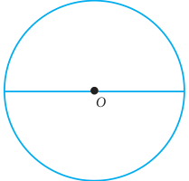
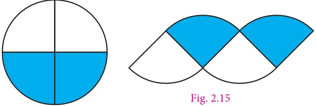
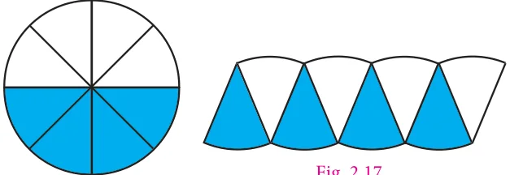
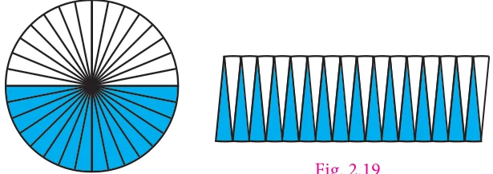
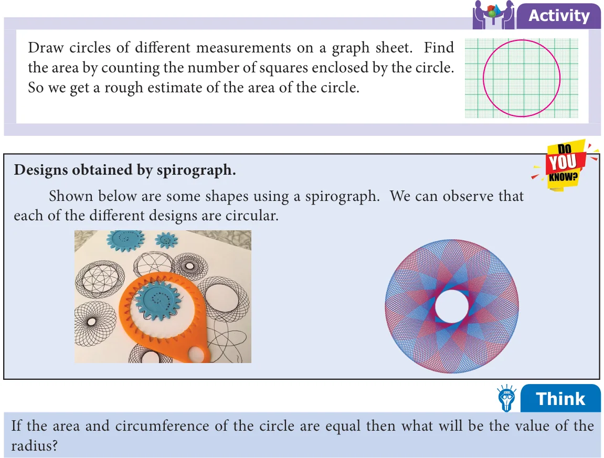
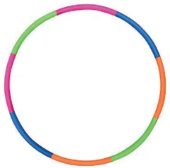
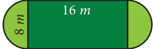

Let us consider the following situation.
A bull is tied with a rope to a pole. The bull goes round to eat grass. What will be the portion of grass that the bull can graze?
Can you tell what is needed to be found in the above situation, Area or Perimeter? In this situation we need to find the area of the circular region.
Let us find a way to calculate the area (A) of a circle in terms of known area, that is the area of a rectangle.

- 1.Draw a circle on a sheet of paper.
- 2.Fold it once along its diameter to obtain two
semicircles. Shade one half of the circle (Fig. 2.13)

- 3.Again fold the semicircles to get
4 sectors. Fig. 2.14 shows a circle divided into four sectors. The sectors are re-arranged and made into a shape as shown in Fig. 2.15.

- 4.Repeat this process of folding to
eight folds, then it looks like a small sectors as shown in the Fig. 2.16. The sectors are re-arranged and made into a shape as shown in Fig. 2.17. Fig. 2.16
- 5.Press and unfold the circle. It is

then divided into 16 equal sectors and then into 32 equal sectors. As the number of sectors increase the assembled shape begins to look more or less like a rectangle, as shown in Fig. 2.19. Fig. 2.18
- 6.The top and bottom of the rectangle is more or less equivalent to the circumference
of the circle. Hence the top of the rectangle is half of the circumference = pr . The height of the rectangle is nearly equivalent to the radius of the circle. When the number of sectors is increased infinitely, the circle can be rearranged to form a rectangle of length ‘ pr ’ and breadth ‘r’.
We know that the area of the rectangle \(= l \times b\)
So, the area of the circle, \(A =\) pr sq units. .

Example 2.9 Find the area of the circle of radius 21 cm (Use \(p = 3 14\). ).
Solution
Radius (r) \(= 21\) cm
Area of a circle = pr sq. units
\(= 3.14 \times 21 \times 21 = 1384.74\)
Area of the circle \(= 1384.74\) cm
Example 2.10 Find the area of a hula loop whose diameter is 28 cm (use \(p = \frac{22}{7}\) ).
Solution

Given the diameter (d) \(= 28\) cm
Radius (r) \(= \frac{28}{2} =14\) cm
Area of a circle = pr sq units.
\(= \times 14 \times 14 \frac{22}{7}\) Fig. 2.20
So, the area of the circle \(= 616\) cm .
Example 2.11 The area of the circular region is 2464 cm . Find its radius and diameter.
(use \(p = \frac{22}{7}\) )
Solution
Given that the area of the circular region \(= 2464\) cm
pr \(= 2464\)
\(\times r = 2464 2 784 \frac{22}{7} r^{2}_{2} = 2464 \times \frac{7}{22} 22 392196 r =112 \times 7 = 784 2 98\)
\(r = 2 \times 2 \times 2 \times 2 \times 7 \times 7 7 49 = 4 \times 4 \times 7 \times 7 7\)
\(= 4 \times 7\)
\(r = (4 \times 7)\) [r \(\times r = (4 \times 7) \times (4 \times 7)] r = 4 \times 7 = 28\) cm
Diameter (d) \(= 2 \times r = 2 \times 28 = 56\) cm.
Example 2.12 A gardener walks around a circular park of distance 154 m. If he wants to level the park at the rate of ₹25 per sq.m, how much amount will he need? (use \(p = \frac{22}{7}\) )
Solution
The distance covered by the man is nothing but the circumference of the circle.
Given that the distance covered \(=154 m\)
Therefore circumference of the circle \(=154 m\)
That is, \(2pr =154 2 \times \frac{22}{7} \times r =154 r =154 \times \frac{7}{44} r = 3 5\). \(\times 7 = 24 5\).
Area of the park = pr sq.units
\(= \frac{22}{7} \times 24 5\). \(\times 24 5\). \(= 22 \times 3 5\). \(\times 24 5\).
\(=1886 5\). m
Cost of levelling the park per sq.m = ₹ 25.
Cost of levelling the park of \(1886.5m = 1886.5 \times 25 =\) ₹ 47,162.50
Example 2.13 Find the length of the rope by which a cow must be tethered in order that it may be able to graze an area of 9856 sq.m (use \(p = \frac{22}{7}\) ) Solution 2 3136 Given that, the area of the circle \(= 9856\) sq.m 2 1568
pr \(= 9856 2 784 \frac{22}{7} \times r^{2} = 9856 22 392196\)
\(r = 9856 \times \frac{7}{22} 2 98 r^{2} = 448 \times 7 = 3136 7 49\)
\(r = 2 \times 2 \times 2 \times 2 \times 2 \times 2 \times 7 \times 7\)
\(r = 8 \times 8 \times 7 \times 7 = 8 \times 7 = (8 \times 7) r = 8 \times 7 = 56 m\)
Therefore the length of the rope should be 56 m.

Example 2.14 A garden is made up of a rectangular portion and two semicircular regions on either sides. If the length and width of the rectangular portion are 16 m and 8 m respectively, calculate (p \(= 3 14\). ) Fig. 2.21
- (i)the perimeter of the garden (ii) the total area of the garden
Solution
- (i)The perimeter of the rectangular garden
Perimeter include two lengths each of 16 m and two semi circular arcs of diameter 8 m. Circumference of the semicircle \(= \frac{pd}{2}\) units
\(= \frac{p \times 8}{2} = 4p = 4 \times 3 14\).
\(=12 56\). m
Therefore, circumference of two semicircles \(= 2 \times 12 56\).
\(= 25 12\). m
Total perimeter= length + length + circumference of two semicircles
\(=16 +16 + 25 12\). \(= 32 + 25 12\).
\(= 57 12\). m
- (ii)The total area of the garden
Total area of the garden = Area of rectangle + Area of 2 semicircles = Area of rectangle + Area of the circle
Here, the area of the rectangle \(= l \times b\) sq. units
\(=16 \times 8\)
\(=128 m ...(1)\)
Area of the circle = pr sq units.
\(= 3 14\). \(\times 4 \times 4\)
\(= 3 14\). \(\times 16\)
\(= 50 24\). m ...(2)
From (1) and (2), the total area of garden \(=128 + 50 24\).
\(=178 24\). m
Try these
Draw circles of different radii on a graph paper. Find the area by counting the number of squares covered by the circle. Also find the area by using the formula.
- (i)Find the area of the circle, if the radius is 4.2 cm.
- (ii)Find the area of the circle if the diameter is 28 cm.